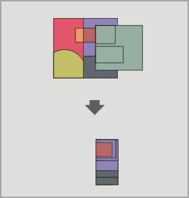

Intersezione
Questo geoprocesso opera su due layer: il layer di input ed il layer di confronto, le cui geometrie possono essere poligoni, linee o punti.
Per ogni geometria del layer di input, viene calcolata la sua intersezione con le geometrie del layer di confronto. In particolare:
L'intersezione tra un layer di poligoni e uno di linee restituisce come risultato un layer di linee.
L'intersezione tra un layer di poligoni e uno di punti restituisce come risultato un layer di punti.
L'intersezione tra due layer di linee restituisce come risultato un layer di punti.
L'intersezione tra due layer di poligoni restituisce come risultato un layer di poligoni.
Per ogni intersezione, è creato un nuovo elemento avente l'intersezione come geometria e tutti gli attributi alfanumerici delle geometrie che lo hanno originato (di input e di confronto). E' anche noto come "Spatial AND", poichè gli elementi del layer risultante modellano lo spazio comune ad entrambi i layer.

Esempio applicativo: dato l'uso del suolo di una regione (es. CORINE2000) e il layer della carta geologica nazionale, è possibile ottenere un layer di poligoni caratterizzati da informazioni omogenee circa l'uso del suolo e la geologia.